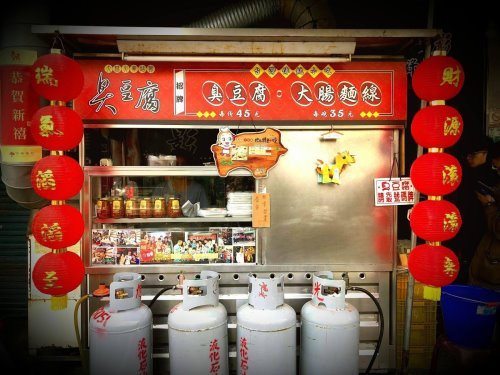
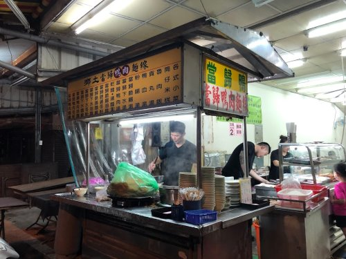
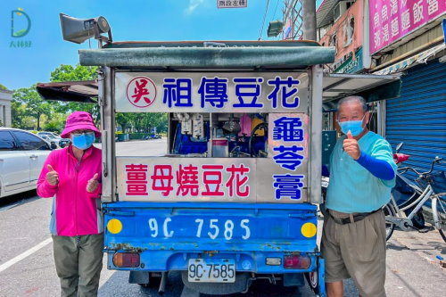

火車站前臭豆腐 這家店絕對是大林鎮最有名的美食，很多人為了吃這盤臭豆腐專程下交流道，吃起來那個爆汁感跟特製的小魚辣椒，真的會讓你印象深刻！現在招牌上寫著「臭非臭」，網路上的名字是《大林火車站前臭豆腐臭非臭》，老實說，還沒走到店門口，那個「臭香味」就已經先飄過來了。《大林火車站前臭豆腐》現在店家採自助式取餐，門口掛著大大的「用餐須知」，內用的客人要先等聽號碼取餐後再找位置，千萬不要提早佔位，這點規矩要遵守喔！用餐環境的部分，這就是很傳統的台灣 小吃店，整體來說非常簡潔，內用區雖然沒有什麼華麗裝潢，但至少有冷氣，這對夏天來吃熱食的人來說，簡直是救贖。菜單非常簡單直接，主要就是臭豆腐、大腸麵線跟大腸豬血湯這幾樣，價位大約在40元到65元之間，以現在的物價來看算很親民。整體來說，雖然要排隊抽號碼牌，但那個爆汁臭豆腐配上小魚辣椒，真的值得等。如果你路過嘉義大林，或是搭火車經過，一定要下來試試看這家連在地人都排隊的 小吃。 資料來源:布雷克的出走旅行視界 地址: 622嘉義縣大林鎮中山路13號 |
 |
大林鄉土當歸鴨肉麵線 鄉土當歸鴨肉麵線位於嘉義縣大林火車站的前站不遠處，步行約莫5分鐘，從前站門口直直向前走，在差不多100公尺處微右轉，之後繼續直走，差不多也是100公尺的地方，他就會在你的右手邊，雖說是微右轉，但也其實就一條路而已，不用怕會迷路！裡面的空間其實不大也不小，桌子大概10來張，還是可以容納一定數量的客人。鴨肉則是肉質鮮甜，鄉土的鴨肉也很奇特，通常外面的鴨肉吃到最後一定會有肉絲卡在齒縫，但我吃他們的肉少說上百次，就連一次都沒卡過，吃完只能說就四個字，清爽，順口 資料來源:南華大學-2019旅遊傳播 |
 |
祖傳豆花 從鎮上街區到田間鄉村都能聽見叫賣聲 公休日 : 星期一、二 |
 |